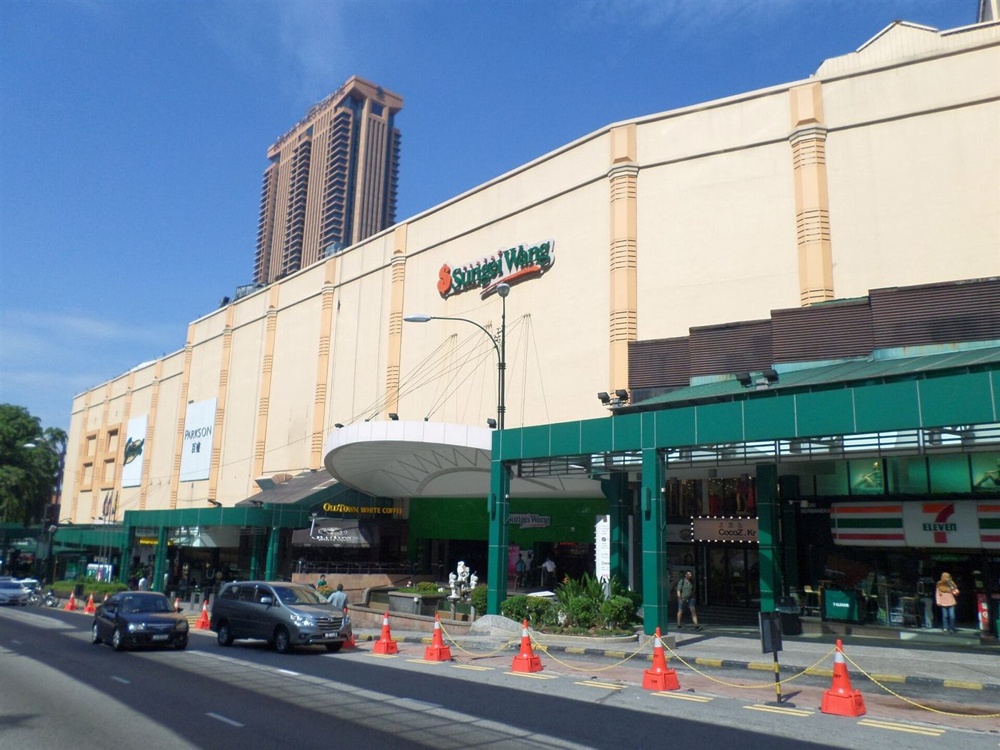

REFASH
clothes kept out of landfill (REFASH Malaysia, n.d.-c).

Sungei Wang Plaza, KL, home to one of REFASH's Malaysian stores. Photo: Chongkian, CC BY-SA 4.0, Wikimedia CommonsCompany & initiative
REFASH had opened up in Malaysia in 2017 and has been owned by Carousell ever since 2022 (Aziz, 2017; Teng, 2022). Its main goal is buying back preloved clothes for cash, or 50% more in store credit, while the rejected items would go to a textile recycler (REFASH Malaysia, n.d.-b, n.d.-c).
Marketing strategy
Its own marketing uses rewards such as the Thrifter Club vouchers, RM20 sales and campus events such as the Thrift Fiesta at Taylor's University (REFASH Malaysia, n.d.-a).
Why it worked
This would work through operant conditioning as selling and returning are rewarded while checking every item lowers a perceived risk (Hur, 2020).
Contribution to sustainability
REFASH has kept over 9.8 million clothes out of landfill (REFASH Malaysia, n.d.-c), but it does not accept modest wear or ethnic clothing, which would leave out many Malaysian shoppers (REFASH Malaysia, n.d.-b).